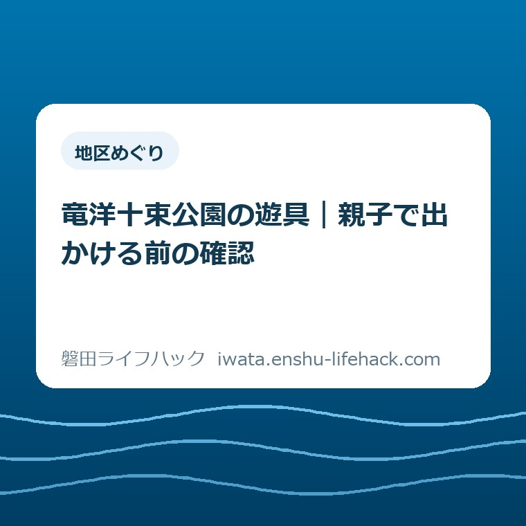
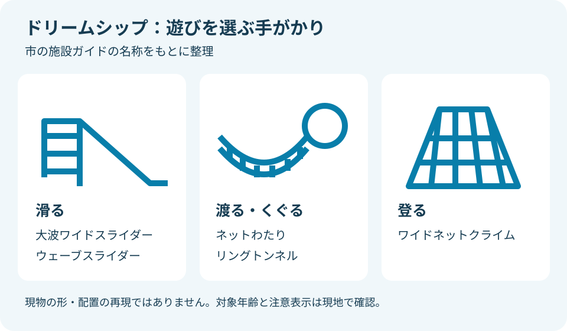
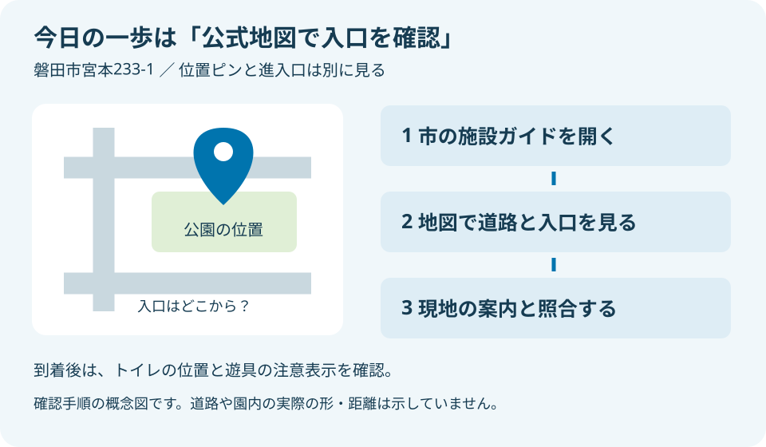

地区めぐり
竜洋十束公園の遊具｜親子で出かける前の確認

この記事の要点
Q. 竜洋十束公園の遊具で遊ぶ前に、何を確かめればいい？
A. 竜洋十束公園では2026年3月に複合遊具が更新されました。所在地は磐田市宮本233-1。駐車場と多目的トイレがあり、車いす対応の出入り口も案内されています。遊べる範囲は年齢や当日の状態で変わります。今日の一歩は、市の施設ガイドから地図を開き、入口への近づき方を確認することです。
公園へ出かける準備は、家を出る前から始まる
竜洋十束公園へ子どもを連れて出かける日は、遊具以外の準備もあります。着替えをまとめ、水筒を用意し、トイレの場所を調べる。きょうだいの年齢が違えば、同じ場所で過ごせるかも気になります。「公園へ行くだけ」と言われても、保護者がすでに払っている手間は小さくありません。
設備や利用条件の案内があっても、家族に合うかは個別に変わります。子どもの年齢、歩ける距離、付き添う大人の人数で、選べる遊び方は違います。遊具の利用可否は現地表示と当日の状態で確認してください。本記事は2026年10月2日に市の公表情報を確認して整理したものです。
私は大石浩之（磐田市／不動産業）です。この記事は現地を親子で訪問した体験記ではありません。公表されている設備の情報と、私が考える外出の段取りを分けて書きます。写真の印象だけで「誰でも楽しめる」と決めつけず、出発前に判断できる材料を増やすための案内です。
この記事で扱うのは、宮本にある竜洋十束公園の親子利用です。竜洋地区の公園でも、昆虫展示を見に行く予定とは準備が違います。展示を目的にする場合は、竜洋昆虫自然観察公園のカイコ展の記事で、別施設として日程や利用案内を確認できます。
2026年3月に更新された複合遊具を知る
磐田市「施設ガイド 竜洋十束公園」は、2026年3月に複合遊具がリニューアルしたと案内しています。通称はドリームシップです。施設ガイドの更新日は2026年6月30日。昔の写真を保存している場合は、更新前の遊具を前提に予定を立てないよう、現在の公式案内と見比べるのがよさそうです。
園内施設欄の複合遊具には、大波ワイドスライダー、ネットわたり、リングトンネル、ウェーブスライダー、ワイドネットクライムが挙がっています。ほかにジャングルジムも掲載されています。正式な名前は、子どもと遊びたいものを話すときにも、現地で案内を探すときにも役立ちます。
市の「広報いわた令和8年4月号」の案内ページにも、28〜29ページのイワタフォトニュースに遊具リニューアルの記事名があります。施設ガイドだけでなく、広報の記事案内からも更新の話題をたどれます。ただし、2026年4月号の掲載と、訪問日の遊具の使用状況は別の情報です。
私が注目したのは、滑る遊びだけでなく、渡る・くぐる・登る遊びも名前に表れていることです。滑り台が好きな子と、ネットを試したい子では、目を向ける場所が違いそうです。一つの複合遊具でも、家族全員が同じ動きをするとは限らない。その前提を持つだけで、付き添う場所を考えやすくなります。
遊具ごとの対象年齢、寸法、難しさの区分は、今回確認した施設ガイド本文には示されていません。「幼児なら全部使える」「小学生なら付き添いはいらない」とは書けません。名称は遊びの手がかりであり、利用できる年齢の証明ではないからです。現地の注意表示を読んでから、子どもに合う範囲を選ぶ形になります。

トイレは「ある」と「必要な設備がある」を分ける
磐田市の施設ガイドには、トイレとして多目的トイレが掲載されています。バリアフリー対応状況にも、車いす使用者用トイレと車いす対応の出入り口が示されています。子どものトイレや付き添いを考える保護者にとって、設備の有無を出発前に調べられる情報です。
一方、おむつ交換台、授乳スペース、子ども用便座の有無は、今回確認した案内からはわかりません。多目的トイレという名称だけで、乳幼児向けの設備がすべてあるとは判断できません。必要な設備が決まっている家庭は、その設備名を使って市の担当窓口に尋ねるほうが、答えの行き違いを減らせます。
私なら、到着したら遊具へ向かう前にトイレの位置を目で確かめる順番を勧めます。これは園内の距離を測った結果ではなく、移動を減らすための提案です。子どもが遊び始めてから大人だけで探しに戻るより、家族が一緒に動いている間に場所を把握するほうが段取りを組みやすいと考えます。
車いす対応の出入り口があるという案内も、園内のすべての経路を同じ条件で通れるという意味ではありません。ベビーカーの幅や荷物、付き添いの仕方で使いやすさは変わります。入口から目的の場所までの通り方は、地図と現地の路面を合わせて確かめる必要があります。
家族に情報を送るなら、「トイレあり」だけで終えず、「多目的トイレの掲載あり。交換台は未確認」と添える方法があります。確認済みと未確認を同じ言葉でまとめない工夫です。調べた人と当日連れて行く人が違う場合にも、どこまで分かっているのかを引き継げます。
アクセスは宮本233-1から、入口までつなげる
竜洋十束公園の所在地は磐田市宮本233-1です。市の施設ガイドは交通アクセスを、県道豊田竜洋線沿い、新幹線ガードから南へ50mと案内しています。駐車場も「有り」と掲載されています。住所と目印を組み合わせれば、同じ竜洋地区にある別の施設との取り違えを避けやすくなります。
ここで気をつけたいのは、南へ50mという数字の読み方です。市が示す道路上の目印であって、駐車位置から遊具まで50mという意味ではありません。歩行時間も示していません。数字が載っているからこそ、何と何の間の距離なのかを変えずに受け取る必要があります。
公式ページの地図欄には、外部地図を表示するリンクがあります。今日の一歩は、そのリンクを開いて公園周辺を拡大し、入口へどう近づくかを確かめることです。位置を示すピンだけを目的地と見なさず、道路と敷地のつながりを見る。入口の位置が読み取れなければ、推測した場所へ進入せず、市の案内や現地表示で確認します。
私は、公園の位置と車の入口を別々に確かめるほうがよいと考えます。地図のピンは場所を探す助けになりますが、そこが駐車場の進入口だと保証するものではありません。送迎を家族に頼む場合も、公園名だけを伝えるより、同じ地図を見て到着側の道路を共有するほうが話が通じます。
駐車台数、満車になる時間帯、料金の扱いは、今回確認した施設ガイドでは確認できませんでした。駐車場があることから「必ず停められる」「無料である」と話を広げません。車で行く場合は、停められないときに路上で待ち続ける予定を組まず、その日の訪問を見送る余地も残したいところです。
徒歩や自転車で向かう家庭も、公園の名称を覚えるだけでは経路は決まりません。どの道から近づくかを地図で確認し、道路を横断する箇所を把握する考え方は共通です。本文では現地確認をしていない近道や、具体的な駐輪場所を案内しません。分からない道を便利な道として勧めないためです。

良い点は、遊具と生活設備を一緒に調べられること
竜洋十束公園の公式案内は、遊具の更新と、駐車場・トイレ・出入り口の情報を一つの施設ページにまとめています。複合遊具の名前だけで終わらず、親子が現地で過ごすための設備まで載っている点は評価できます。遊びたい内容と、連れて行ける条件を同じ画面で見比べられます。
私にとって良い点の一つは、更新時期が2026年3月と明記されていることです。家族が持つ以前の印象と現在の案内を分けられます。古い写真で見た場所を探し続けるのではなく、公式ページを見直すきっかけがある。外出前の調べ物をやり直す理由が分かるのは、実用的です。
もう一つは、公園が複合遊具だけの場所ではないと分かることです。施設ガイドには多目的広場、バスケットゴール、サッカーゴールも掲載されています。遊具を検索していた人には意外かもしれません。ただし、設備が載っていることと、当日に希望どおり使えることは分けて考える必要があります。
私は、広場もあると知ることで、遊具だけを回り切る予定から離れられると考えます。きょうだいの希望が違うときも、全員を一つの遊びに合わせる必要はありません。ただ、別の場所で遊ぶなら大人が見守れる範囲が前提です。施設の選択肢を増やすことと、大人の目を届かせることをセットにしたいと思います。
注文したい点は、親が知りたい条件の見つけやすさ
竜洋十束公園の施設ガイドには、遊具や生活設備の有無が示されています。一方、対象年齢や乳幼児向け設備、駐車場入口の細かな案内は、今回確認した本文だけではそろいません。外出先を選ぶ家庭には、設備名の先にある利用条件まで必要になる場面があります。
私が注文したい点は、現地の注意表示や入口案内を、出発前にもたどりやすくしてほしいということです。新しい遊具に関心を持っても、自分の子が使えるか分からなければ、保護者は別のページを探します。写真を増やすなら、全景に加えて、判断に使える案内が読める形だと助かります。
ただ、すべての家庭の条件を一枚の案内に載せられるのかは、私も迷います。年齢が同じでも、登ることが好きな子と苦手な子では違います。情報を増やせば解決する部分と、当日の親子の判断に残る部分がある。市の案内に求める範囲を広げすぎず、まず入口と設備の条件を見つけやすくすることを望みます。
問い合わせる場合も、「子ども向けですか」という広い聞き方より、必要な一点に絞るほうが具体的です。おむつ交換台が必要ならその有無、車いすなら入口からの通行について尋ねる。施設ガイドに掲載された市の情報発信元へ、家庭で必要な条件を言葉にして伝えるための準備です。
親子の人数に合わせて、遊び方の予定を軽くする
竜洋十束公園での過ごし方は、遊具の数を基準に詰め込むより、家族の人数と付き添い方で考えるほうが組み立てやすくなります。以下は公園が定めた利用ルールではなく、私の提案です。利用時間や対象年齢を新たに設定するものではありません。
大人1人と子ども2人で行くなら、最初から別々の遊具へ向かう予定を立てない方法があります。まず同じ範囲で遊べるかを見て、難しければ遊びを減らす。年上の子に年下の子の見守りを丸ごと任せるのではなく、大人が把握できる範囲を基準にする考え方です。
大人2人で付き添える場合は、到着してから役割を決めるより、移動中に一度話しておくと引き継ぎやすくなります。トイレへ付き添う人が動くとき、もう1人は誰を見ているのか。これは特別な持ち物を増やす準備ではありません。役割を言葉にするだけの準備です。
荷物は「念のため」を積み重ねるほど運ぶ量が増えます。私は、普段の外出で使う飲み物や着替えを基本にし、未確認の設備に頼る予定を減らすほうがよいと考えます。現地に売店や自動販売機があるという確認は取れていないため、買える前提で持ち物を省く提案はしません。
公園の後に別の予定を入れるなら、移動まで含めて考えたいところです。散歩中心の日にする場合は、磐田市ウォーキングマップのコース選びが別の判断材料になります。この記事は公園から特定コースへ歩けることや、所要時間を保証するものではありません。
外遊びを見送る日も、予定の失敗と決めなくて構いません。家で読む本を選ぶなら、電子図書館と紙の本を比べた記事を参考にできます。公園、散歩、読書を一日で全部こなす必要はない、というのが私の考えです。
対案・結論――今日は公式地図で入口を確かめる
竜洋十束公園へ行くために、今日一つだけ進めるなら、市の施設ガイドから地図を開きます。住所が磐田市宮本233-1であることを照らし合わせ、公園と周囲の道路、入口への近づき方を確認します。入口が読み取れない場合は、「入口未確認」と残すところまでで構いません。
地図を見終えたら、同行する家族には同じ公式ページを共有できます。別々の検索結果や古い画像を送り合うより、判断の出発点をそろえられます。「駐車場は掲載あり、台数は未確認」といった短いメモも添えられます。未確認を隠さず渡すことが、当日の思い込みを減らします。
公園選びそのものを見直したくなった場合は、磐田市の公園を探す案内が入口になります。竜洋十束公園で遊ぶかどうかと、磐田市内の公園を探す作業は別です。家族の条件に合う場所を選び直す余地を持ちながら、今日の確認は一つに絞れます。
到着後は、地図で想定した入口と現地表示が一致するかを確認します。そのうえでトイレの位置と遊具の注意表示を見る。この順番は市の指定ではなく、私が提案する段取りです。工事や点検などの表示があれば、公表済みの設備情報より当日の案内を優先してください。
大石の視点――親の準備を増やすだけの紹介にはしない
私は、親の準備を増やすだけの公園紹介にはしたくない。遊具が更新されたと聞いて関心を持った家族に、調べる宿題をいくつも渡して終えるのは違うと思います。入口が分かる、トイレの有無が分かる。その二つを手元に残せるだけでも、外出の段取りには意味があります。
不動産の言葉でいえば、住所が分かることと、そこへどう入るかが分かることは別です。私は公園案内でも、この区別を大事にしたいと考えます。見栄えのする設備名の前後に、実際に家族が動く道筋を置く。施設の価値を、利用する側の手間まで含めて読むということです。
新しい遊具を全部試すことを、その日の成功の条件にする必要はありません。子どもが一つ選んで遊び、保護者が無理なく帰れるなら、その家族に合った外出です。私の判断基準は、施設を褒める言葉の数より、出かける人の迷いが一つ減るかどうかにあります。
この記事の設備・数値は変更される場合があります。個別の利用条件は市の担当窓口や現地表示で確認してください。出発前の最後の確認先は、磐田市公式「施設ガイド 竜洋十束公園」です。
よくある質問
竜洋十束公園の遊具・設備・アクセスについて、2026年10月2日に確認した市の案内に基づく回答です。
竜洋十束公園には、どんな遊具がありますか。
磐田市の施設ガイドには、ジャングルジムと複合遊具が掲載されています。複合遊具の内訳は大波ワイドスライダー、ネットわたり、リングトンネル、ウェーブスライダー、ワイドネットクライムです。2026年3月に更新された案内があります。対象年齢や当日の利用可否は現地表示で確認してください。
駐車場とトイレはありますか。
磐田市の施設ガイドでは、駐車場と多目的トイレの設置が案内されています。車いす対応の出入り口も掲載されています。ただし、駐車台数、おむつ交換台や授乳設備の有無は今回の確認資料からはわかりません。必要な設備がある家庭は、その設備名を伝えて市の担当窓口へ確認してください。
初めて行くとき、アクセスはどこを確認しますか。
所在地は磐田市宮本233-1です。市の案内では県道豊田竜洋線沿い、新幹線ガード南へ50mが目印です。公式施設ガイドの地図リンクから周辺を拡大し、入口への近づき方を確認してください。地図の位置ピンが駐車場入口とは限りません。読み取れない部分は現地表示や市の案内で確認します。
参考にした公式情報
- 施設ガイド 竜洋十束公園／磐田市（2026年6月30日更新、2026年10月2日確認）
- 広報いわた令和8年4月号／磐田市（2026年5月7日更新、28〜29ページの記事案内を2026年10月2日確認）
最終確認日：2026-10-02 ／ 本記事は公表情報と執筆者の見解を分けて記載しています。制度・数値・公開状況は変更される場合があるため、最新情報は磐田市公式ページでご確認ください。